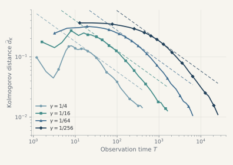
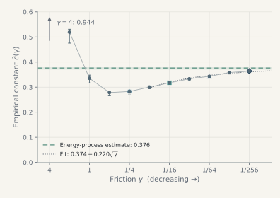
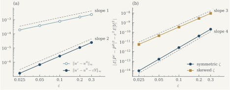

研究 01
Berry–Esseen Bounds for Periodic Langevin Dynamics
研究海报
O. Smith、A. Valse、D. Wu（按姓氏字母顺序排列）。论文即将发布。指导教师：David P. Herzog 教授。
本项目为周期 Langevin 动力学的展开位移建立 Berry–Esseen 型定量高斯近似界。我研究命题 11.1 的出发点是：当摩擦参数 \(\gamma\) 趋于零时，如何控制主定理中 Berry–Esseen 常数对 \(\gamma\) 的依赖？
美国国家科学基金会（NSF）资助 ·
项目编号 DMS-2246491
我的贡献
- 为展开位移建立 Berry–Esseen 分析框架，并证明过阻尼情形下的结果。
- 通过直接将位移作为 Markov 加性过程处理，证明欠阻尼情形下的主要定理及相关命题；其中假设 (A2) 的验证由 O. Smith 完成。
- 在命题 11.1 中证明：对从平衡分布出发的一维周期欠阻尼动力学，当正摩擦参数 \(\gamma\) 足够小时，Berry–Esseen 常数可选为满足 \(C_{\gamma} \le C\gamma^{-1/2}\)，其中 \(C\) 不依赖 \(\gamma\)。
- 完成过阻尼与欠阻尼输运模拟，计算常数对摩擦的依赖，并与平均化能量动力学比较。
合作稿件还包含 A. Valse 的其他数值研究。
核心贡献 · 命题 11.1
低摩擦情形下 Berry–Esseen 常数的控制
对从平衡分布出发的一维周期欠阻尼系统，我证明：当正摩擦参数 \(\gamma\) 足够小时，Berry–Esseen 常数可选为满足
\[ C_{\gamma} \le C\gamma^{-1/2}. \]
其中 \(C\) 不依赖 \(\gamma\) 和观察时间。
等价地，对 \(T \ge 1\)，Kolmogorov 距离满足
\[ d_K\!\left(\mathcal{L}(Y_T^{\gamma}),\,\mathcal{N}(0,\sigma_{\gamma}^{2})\right) \le \frac{C}{\sqrt{\gamma T}}. \]
\(C/\sqrt{\gamma T}\) 的形式说明 \(\gamma T\) 是误差界中的组合参数；这一结果的重点是明确控制 Berry–Esseen 常数对 \(\gamma\) 的依赖。


模型取 \(V(q)=\cos q\)、\(\beta=1\)，每个摩擦系数模拟 80,000 条从平衡分布出发的路径。左：四个摩擦系数下经验 Kolmogorov 距离随观察时间的变化，虚线为 \(\widehat C_{\gamma}T^{-1/2}\)。右：当 \(\gamma\) 从 1/4 降至 1/256，重标定常数 \(\widehat c(\gamma)=\sqrt{\gamma}\,\widehat C_{\gamma}\) 从 0.283 增至 0.364；能量过程模拟给出小摩擦参考值 0.376。模拟设置与更多结果见研究海报。
证明思路
-
01
按弛豫尺度采样。
将过程划分为长度与 \(\gamma^{-1}\) 同阶的时间块，构造离散骨架链。
-
02
建立一致混合估计。
对连续时间半群估计进行尺度变换，使采样链的谱隙在小 \(\gamma\) 范围内具有一致下界。
-
03
控制矩与方差。
为分块平均速度建立一致四阶矩界，并利用一维扩散系数的下界排除方差退化。
-
04
应用一致 Berry–Esseen 定理。
在 Markov 加性过程框架下，得到 Kolmogorov 距离的 \(C/\sqrt{\gamma T}\) 误差界。
研究 02
Mortgage Backed Securities with p-Laplacian Diffusion and Random Prepayment
arXiv 预印本
Dianchao Wu、Rana D. Parshad · 2026 年 11 月 24 日 · arXiv:2611.33367
我研究提前还款强度的小随机变化如何影响抵押贷款支持证券（MBS）的价格。论文分别讨论确定性 p-Laplacian 扩散和随机提前还款。以下介绍随机提前还款部分，采用 \(p=2\) 的 Papi–Briani 模型，利用概率表示识别价格的一阶响应、控制近似误差，并量化由此产生的均值和方差变化。
随机提前还款环境如何改变定价解，以及它的均值和方差？
随机提前还款 · \(p=2\) 下的随机系数模型
模型在 \(\mathbb{R}^2\) 上追踪金融因子与累计提前还款量，并将提前还款强度扰动为 \(\eta^{\varepsilon}=\eta^0(1+\varepsilon\zeta)\)，其中 \(\zeta\) 具有连续路径和确定性一致上界。每一种系数情景对应一个退化非线性定价 PDE。环境噪声用于选取系数情景，BSDE 中的布朗运动则是表示该情景下定价解的辅助工具。
- 利用 Papi 的黏性解理论获得适定性与价格界，再通过未知量变换消去梯度二次项，建立 Lipschitz BSDE 表示。
- 建立有界线性响应算子与一致二阶余项，得到解映射在上确界范数下的 Fréchet 可微性。
- 推导均方敏感性、平均价格偏差及 Hilbert 空间方差展开，并用输入噪声的协方差表示价格方差的主导项。
- 允许连续有界扰动，无需扰动的时间导数，也无需价格的经典空间导数。
定理 4.1 与推论 4.2
价格的一阶响应与二阶余项
\[ P^{\varepsilon}=P^0+\varepsilon Y+R^{\varepsilon},\qquad Y=L\zeta. \]
这里 \(P^{\varepsilon}\) 是证券总价值，\(L\) 是由正倒向变分系统确定的有界线性算子。在论文的假设下，当 \(\varepsilon\) 足够小时，几乎处处有
\[ \lVert R^{\varepsilon}\rVert_{\infty}\le C\varepsilon^2\lVert\zeta\rVert_{\infty}^2. \]
该界对状态和时间一致成立，并给出 \(L^2(\Omega;C([0,T];H))\) 中的 \(O(\varepsilon^2)\) 余项，其中 \(H=L^2(\mathbb{R}^2,\nu)\)，\(\nu\) 为概率测度。均方价格变化满足以下对 \(t\) 一致的展开：
\[ \mathbb{E}\lVert P^{\varepsilon}(t)-P^0(t)\rVert_H^2=\varepsilon^2\mathbb{E}\lVert Y(t)\rVert_H^2+O(|\varepsilon|^3). \]
对于中心化扰动，平均价格偏差为 \(O(\varepsilon^2)\)，且
\[ \operatorname{Var}_H(P^{\varepsilon}(t))=\varepsilon^2\mathbb{E}\lVert Y(t)\rVert_H^2+O(|\varepsilon|^3). \]
证明思路 · 从定价 PDE 到价格响应
先由黏性解适定性获得有界的价格区间，再用幂变换消去梯度二次项，将变换后的解识别为 Lipschitz BSDE 的值函数。随后线性化正向提前还款动力学和倒向方程，控制 Taylor 余项，再通过逆变换得到一致敏感性估计。由于响应算子是确定性的线性算子，价格方差的主导项仅依赖提前还款扰动的协方差。
数值算例 · 第 4.1 节
误差阶与噪声不对称性
采用 IMEX Euler 有限差分格式，在金融因子方向隐式离散、累计提前还款方向使用迎风格式，在有界计算区域上展示理论估计。这里的数值响应 \(Y\) 是离散格式对 \(\varepsilon\) 的导数。
对于对称分布，在 \(0.025\le\varepsilon\le0.2\) 范围内，所取状态–时间窗口上价格变化与线性化余项的双对数斜率分别为 1.00 和 2.00。协方差相同的对称与偏斜中心化扰动具有相同的均方首项，而发行时点展开误差的观测斜率分别为 4.00 和 2.99。这些实验展示了噪声高阶矩对首项之外误差的影响。

预印本图 1，按网站配色重新着色。(a) 对称分布下价格变化与线性化余项的上确界范数。(b) 协方差相同的对称与偏斜扰动在发行时刻的均方展开误差。虚线为参考斜率。
论文也报告了网格加密与计算区域扩大的检查结果。
下一阶段计划 · 2027 年春季
加入加性噪声的 SPDE 扩展
2027 年春季，我计划直接在 MBS 演化方程中加入加性随机驱动，推进 SPDE 研究。拟研究的形式示意为：
\[ du_t^{\varepsilon}=\mathcal{F}(t,u_t^{\varepsilon})\,dt+\varepsilon G(t)\,dW_t. \]
其中 \(\mathcal{F}\) 表示选定的 MBS PDE 算子，\(W\) 为 Wiener 过程，噪声系数 \(G(t)\) 不依赖于解。随机积分将直接进入演化方程；具体的分析框架与噪声正则性将在后续工作中确定。
01
适定性与矩估计
为加性噪声模型建立存在性、唯一性及适当的随机矩估计。
02
稳定性与小噪声极限
研究解对随机驱动的敏感性，以及噪声幅度趋于零时向确定性基准模型的收敛。
03
数值探索
结合分析估计，考察直接随机驱动如何改变样本路径、平均价格及方差。